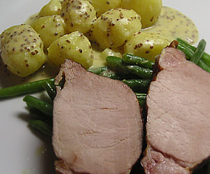

Rippli
4,5 von 6Das Rippli bei ca. 80 Grad je nach Gewicht zwischen 1-1,5 Std. in Wasser ziehen lassen, abgiessen, aufschneiden und servieren.

Das Rippli bei ca. 80 Grad je nach Gewicht zwischen 1-1,5 Std. in Wasser ziehen lassen, abgiessen, aufschneiden und servieren.

Montagsplausch Nr. 165. Der Abend hiess «Rippli, Bohnen und Senfkartoffeln».